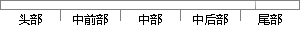

通过注册和监听传感器，并实时获取传感器数据进行处理。
片段位置图

相似结果|
相似片段 1：和电子罗盘传感器的坐标数据，通过这些数据获取校正的旋转矩阵，并将其传递到0penGLEs坐标中实时更新兴趣点POI(PointofImerest)的信息。(1)传感器的注册及监听在onstan()方法
相似片段 2：应用程序中必须通过重写该方法来获取传感器的实时信息并进行相应的处理。SensorManager 提供了数据的采样频率，结合本系统的采样需求以及手机电量考虑，本系统采用的数据采样频率为 5HZ，采样时20?延设为 SENSOR_DELAY_NORMAL（200毫秒）。
相似片段 3： android.hardware 下的SensorManger 类可以获取加速度计和磁力计对象，然后通过 registerListener()方第 71 页法分别对上述两种传感器注册监听，之后系统便能实时监听传感器的数据
相似片段 4：4．3．3 接受和处理传感器数据流人体跌倒检测服务需要从传感器服务中获取加速度传感器数据，就必须向传感器服务发出请求，注册相关的事件监听，处理数据。toggle函数是用来控制传感器数据流，同时也是
|
※ 片段修改建议 ※
近似词参考：- 通过：经由过程
- 实时：及时
- 获取：获得
- 进行：举行
- 处理：处置 处置惩罚
系统自动生成语句：经由过程注册和监听传感器，并及时获得传感器数据举行处置。
注：本片段修改建议为系统自动生成，仅供参考。